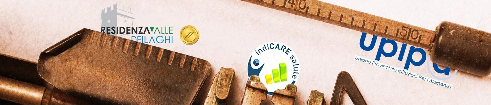

Chi siamo
Il progetto IndiCARE Salute, promosso da U.P.I.P.A. nel 2014, è nato con l’obiettivo di introdurre nelle strutture associate sistemi di qualità orientati al miglioramento continuo.
Gli strumenti principali sono:
- la misurazione e la valutazione delle prestazioni sanitarie attraverso indicatori;
- la comparazione con gli esiti di sistema;
- la pianificazione e l’attuazione di interventi mirati per ottimizzare l’organizzazione e le risorse disponibili.
Le tappe principali
2016 - Il sistema di monitoraggio si amplia grazie alla collaborazione con l’A.P.S.P. Residenza Valle dei Laghi di Cavedine, che aveva avviato un progetto analogo di raccolta e analisi di indicatori.
Per rendere il monitoraggio più efficiente, i due progetti si uniscono, dando vita a un set unitario di indicatori clinico-assistenziali, inizialmente articolato in 7 aree.
Oggi - Le aree monitorate sono diventate 9, con un approccio che unisce attenzione ai processi ed esiti clinici con la qualità della vita delle persone accolte.
Dal 2024 - La collaborazione con l’A.P.S.P. di Cavedine si conclude e U.P.I.P.A. sviluppa una piattaforma interna, interamente gestita, per garantire continuità e innovazione.
Lo sguardo al futuro
Il percorso intrapreso punta non solo a raccogliere dati, ma a trasformarli in informazioni utili e comprensibili per ogni organizzazione.
Attraverso analisi condivise e strumenti di lettura sempre più efficaci, IndiCARE Salute intende supportare gli enti aderenti nella riflessione, nella pianificazione e nel miglioramento continuo della qualità della presa in carico.
Al fine di assicurare la validità e la rigorosità del progetto, è stato nominato un comitato scientifico, organo di riferimento per gli aspetti scientifici e metodologici.